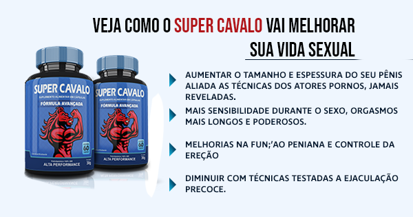

Você está sofrendo de disfunção erétil? Sente vergonha por não conseguir uma ereção satisfatória com a sua parceira? Você gostaria de ser conhecido como a melhor transa da sua parceira?
A disfunção erétil rouba a sua masculinidade e destrói o relacionamento. Segundo estudos da Massachusetts Male Aging Study, foi demonstrado que 52% dos homens acima de 40 anos e 14% dos jovens acima dos 18 anos apresentavam algum grau de disfunção e que 10% tinham total ausência de ereção.
Como se não bastasse a vergonha, 83% das mulheres que traem no casamento alegam insatisfação sexual, mesmo quando há amor na relação. Se não tratada, a disfunção erétil tende a agravar a cada dia que passa.
Existe Cura para a Disfunção Erétil

O mercado está recheado de falsas soluções que prometem solucionar o problema da disfunção (injeções, remédios, suplementos, cirurgias) que, na verdade, só são recursos paliativos que mascaram o problema por pouco tempo.
Perigos do Viagra
O mais famoso entre eles é o comprimido Viagra. Segundo o médico e especialista da USP, Dr Carlos Ferraz, o Viagra não passa de um vasodilatador que abre, não apenas os vasos do pênis, mas do coração, podendo causar até a morte.
Viagra Perde o Efeito?
Além de causar náuseas, dor de cabeça, queda de pressão, o Viagra tem outro agravante. Segundo pesquisa realizada na USP com 50 homens que sofriam de disfunção Erétil e 50 sem o problema, o Viagra tende a diminuir o período do efeito de 3 hora para 25 minutos após 2 meses de uso além de aumentar de 30 minutos para 57 minutos para começar a fazer efeito.
Outro ponto que chamou a atenção dos pesquisadores é que 72% dos homens que não sofriam de ereção passaram a se tornar dependente do Viagra para conseguir ter ereção após 2 meses de uso.
Então, Qual é a Solução?
A equipe de pesquisadores de Cambrige (EUA), ao lado dos médicos Schekman e Pauling, ganhadores do Prêmios Nobel desenvolveram uma fórmula natural para eliminar de vez a disfunção erétil de forma muito rápida, segura e permanente. A solução é um complexo vitamínico que já foi batizado no Brasil de Super Cavalo, conhecido também como O Viagra Natural.
O que Dizem os Especialistas?
Porque Eu Devo Usar Super Cavalo?
Segundo o Dr. Carlos Ferraz, Urologista pesquisador da USP, a Fórmula Revolucionária do Super Cavalo é extremamente eficiente porque os resultados são permanentes, causando o mesmo efeito de dilatação do Viagra, só que de forma cumulativa.
“Viagra é uma solução paliativa e perigosa. Com o uso contínuo, as suas veias que se dilatam devido o remédio, causando a ereção. Mas também se acostumam com a substância. É paliativa porque o efeito que durava 2 horas, diminui até não funcionar mais. É perigosa, pois pode levar a um ataque cardíaco.” Afirma o Doutor Carlos.
Como Funciona a Fórmula Revolucionária do Super Cavalo em Você
O Super Cavalo contém ingredientes que desintoxicam o sangue, fazendo com que ele mesmo elimine as placas de gordura e impede que esse colesterol seja produzido.
Foram testados mais de 1.000 diferentes alimentos, ervas, suplementos e aminoácidos, até chegar a combinação do duran ultra, para ser tomado em uma dose diária.
Devolve a sua ereção natural em até 27 dias
Segura a ejaculação no sexo contínuo entre 15 a 30 minutos
Dilata o pênis dando um efeito mais “grosso” em até 39,3%
Aumenta a libido em até 248% aproximando aos níveis da adolescência
100% natural e seguro
Efeito duradouro
Super Cavalo Pode Causar Aumento no Tamanho do Pênis? Devo me Preocupar?
Segundo pesquisador da USP, a eliminação das placas que causam a disfunção erétil faz com que o sangue dilate o pênis e com que ele chega ao seu tamanho máximo.
“Em média, nosso pênis chega a 78% (entre 16 a 23 anos) do seu tamanho máximo possível por conta das placas que vamos acumulando nos vasos ao longo da vida. A desintoxicação proporcionada pelo Super Cavalo elimina essas placas fazendo com que o pênis chegue a ficar 30% maior e mais robusto, mas as pessoas não devem se preocupar, é apenas o tamanho real do seu pênis” - Afirma o Doutor
Super Cavalo X Viagra X Cialis
Para facilitar, a USP criou um resumo estatístico baseado nos testes realizados com os produtos e que agora disponibilizamos para você:
Para facilitar, a USP criou um resume estatístico baseado nos testes realizados com os dois e que agora disponibilizamos para você:
Super Cavalo Possui Registro na Anvisa
O Super Cavalo é um suplemento vitamínico cuja fórmula é 100% natural e que não traz nenhum prejuízo a saúde de quem o toma. Além do mais, esse produto possui registro no Ministério da Saúde e é autorizado pela Anvisa. Isso passa a garantia necessária que o consumidor está diante de um produto que realmente é eficaz e que não é prejudicial.

Como Devo Tomar?
O consumo desse produto natural para obter bons resultados é duas vezes ao dia. Essa é uma dose mais que suficiente para garantir momentos inesquecíveis a dois, com orgasmos intensos e duradouros e uma ereção invejável.
O Super Cavalo é tão eficaz que há a garantia de 100% de satisfação. Com ela, quem adquire o produto, consome de acordo com o que está prescrito na embalagem por pelo menos dois meses e não fica satisfeito com os resultados obtidos, terá o dinheiro devolvido integralmente sem nenhuma burocracia.
Quanto Custa? Qual é o Preço?
Agora, atenção compre SEMPRE direto no site oficial do fabricante no link abaixo porque além de garantir o desconto progressivo, você terá absoluta certeza de que vai comprar o produto ORIGINAL.
(Nota da Produção: Por causa dessa matéria, entramos em contato com o fabricante do produto Super Cavalo que ofereceu um desconto especial para os nossos leitores. O desconto é válido apenas para os primeiros 100 compradores e é aplicado automaticamente ao clicar na imagem abaixo)
Promoção Exclusiva do Site
Não sabemos até quando esse link estará no ar. Pois existe um grande interesse da indústria dos remédios de tirá-lo do ar. Portanto, se você quer reverter de vez sua disfunção erétil, clique na imagem acima agora mesmo.